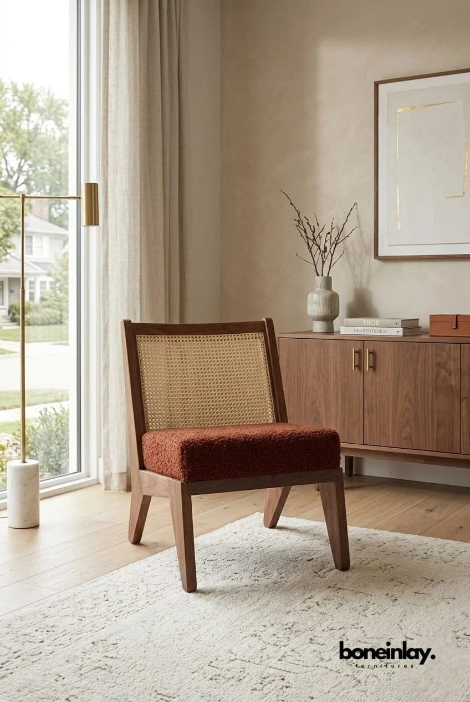

M Rattan Chair
The M-Rattan Chair is is a spin off from our highly successful M-Chair. Like its predecessor, it also takes design cues from the Parthenon's structural columns. The delicately balanced proportions and tapered legs lean slightly inwards, giving the illusion of straight lines and adding lightness.
This classic piece is a timeless and practical addition to any interior.